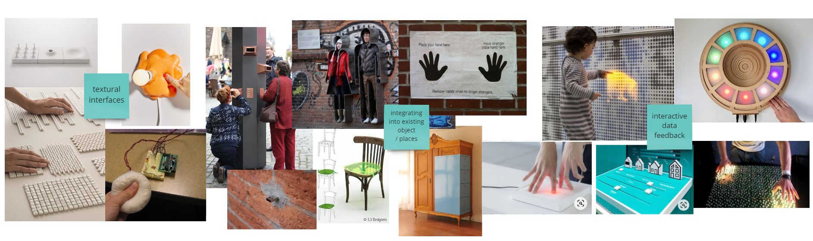
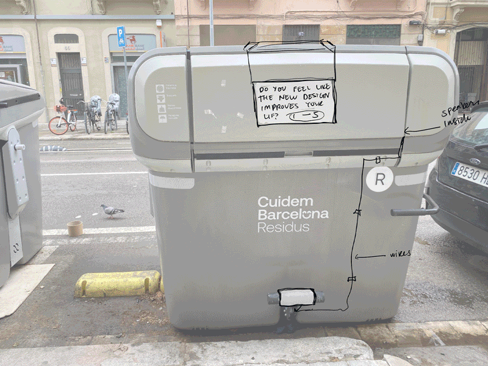
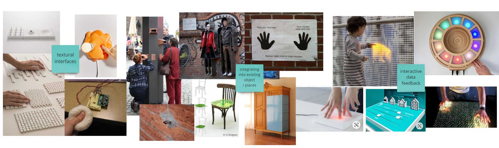
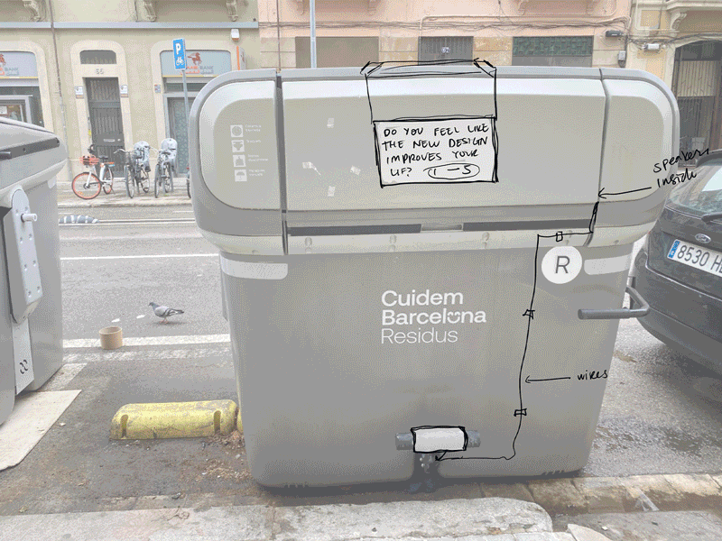

🗓 2 February 2022



In terms of functionality, we discussed what would be the best way for people to cast their votes. Since the garbage bin is typically seen as an unsanitary place, we knew people would not want to touch the bin, so we decided to eliminate the option of capacitive sensors. We explored using infrared sensors that would be attached to the outside of the bin and detect the movement or position of the person., but after the first review with the tutors, we decided to use an interaction which was more intuitive to actually using the garbage bin and and not another separate action. From this insight, we decided that the act of trowing away the garbage (pushing down on the foot pedal) would trigger the questions, which would be audio. We chose the output to be audio because we didn't want to attach a screen or led sensors to the garbage bin and wanted the interaface to be more "hidden" and less intrusive. As for the voting mechanism, we also decided to put this on the pedal of the bin. But instead of using IR sensors, we chose to go with buttons, because it would provide a more accurate result. Since the pedal is a cylindrical shape with two sides, we decided to fix a button on each side, assigning the 1 and 0 (yes and no). Again, to simplify, we chose the feedback output to stay with audio. We started mapping the materials and machines we needed to execute our plan in two and half days.

coding and electronics

See our Miro board here
See our project repository here.
Key Lessons Learned:
MicroChallenge Three
Public design is supposed to be democratic but they often don't consider the community designed they are designing for. For example, these new garbage bins. How does the public actually feel about them, are they "good" or effective designs? We knew we wanted to work with an object or architecture that exists in the public design space that everyone uses or interacts with on a daily basis. We were interested in gathering and reflecting on the impacts of design from the perspective of the public community. To find the subject, we went out on a walk outside the IAAC and not long after discovered we were standing around and having a discussion about the new trash bins that have been placed on the streets of Poblenou in the past few weeks. Some of us were confused because we didn't know what the main change was from the old model or if it was any better. We returned to IAAC and started researching on the design and intent of these new bins. After brainstorming about the main concept, we decided to create a voting device that would collect (and reflect) the opinions of the community, basically anyone who will come to dispose of their trash. We chose a question that is general enough and would reflect the community's feelings, and at the same time provide the feedback back to the community.

In terms of functionality, we discussed what would be the best way for people to cast their votes. Since the garbage bin is typically seen as an unsanitary place, we knew people would not want to touch the bin, so we decided to eliminate the option of capacitive sensors. We explored using infrared sensors that would be attached to the outside of the bin and detect the movement or position of the person., but after the first review with the tutors, we decided to use an interaction which was more intuitive to actually using the garbage bin and and not another separate action. From this insight, we decided that the act of trowing away the garbage (pushing down on the foot pedal) would trigger the questions, which would be audio. We chose the output to be audio because we didn't want to attach a screen or led sensors to the garbage bin and wanted the interaface to be more "hidden" and less intrusive. As for the voting mechanism, we also decided to put this on the pedal of the bin. But instead of using IR sensors, we chose to go with buttons, because it would provide a more accurate result. Since the pedal is a cylindrical shape with two sides, we decided to fix a button on each side, assigning the 1 and 0 (yes and no). Again, to simplify, we chose the feedback output to stay with audio. We started mapping the materials and machines we needed to execute our plan in two and half days.

coding and electronics
See our Miro board here
See our project repository here.
Key Lessons Learned: